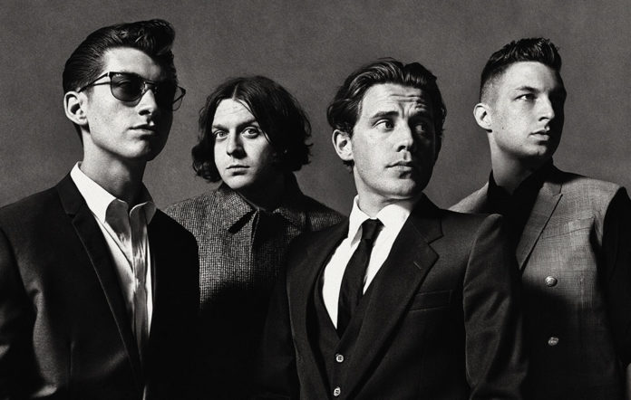

My Favorite Artist

Arctic Monkeys are an English rock band formed in Sheffield in 2002. They comprise
lead singer and guitarist Alex Turner, drummer Matt Helders, guitarist Jamie Cook and
bassist Nick O'Malley. The co-founder and original bassist Andy Nicholson left in 2006.
Though initially associated with the short-lived landfill indie movement, Arctic
Monkeys were one of the earliest bands to come to public attention via the Internet,
during the emerging "blog rock"era. Commentators have suggested that this period
marked a shift in how new bands were promoted and marketed.
Back to home